Auch zum Segelbergen muss das Boot im oder nahezu im Wind liegen. Wenn man seinen Liegeplatz nicht vorm Wind unter Fock anlaufen muss, wird sie zuerst geborgen, um bei Anlege- oder Ankermanöver auf dem Vorschiff unbehindert arbeiten zu können.
| Kommandotafel Segelbergen |
|---|
|
Klar zum Bergen des ...segels!
... segel ist klar zum Bergen! Hol nieder ...segel! |
Das Fockfall lösen, durch die Hand führen, und auf dem Vorschiff das Segel bergen. Das Fall abschäkeln und belegen. Stagreiter der Reihe nach lösen und vom Kopf her das Drahtvorliek nicht zu eng einrollen. Die entstandene lange Rolle kommt entweder in den Segelsack oder wird zusammengefaltet verstaut. Die Fockschot sollte - wenn sie nass ist - draußen am Segelsack getrocknet werden.
Der Baum wird hochgehalten, und der Vorschoter zieht das Vorliek aus der Nut des Mastes, löst den Schäkel am Segelkopf und gibt ihn dem Steuermann, der das Fall als Dirk um den Baum wickelt und befestigt. Die Großschot wird durchgeholt und mit einem Slipstek direkt hinter dem Block gesichert. Danach wird das Großsegel ordentlich eingerollt, wobei vorhandene Segellatten immer parallel zum Segel liegen sollten. Gummistropps oder Zeisinge halten das eingerollte Segel zusammen. Eine Persenning deckt das Segel ab.
Auf Regattajollen wird das Großsegel abgeschlagen. Dafür werden die Segellatten herausgenommen, das Segel ausgebreitet und ziehharmonikaförmig vom Unterliek beginnend zusammengelegt. Als lange Rolle kommt es entweder in den Segelsack oder wird als Paket gelagert.
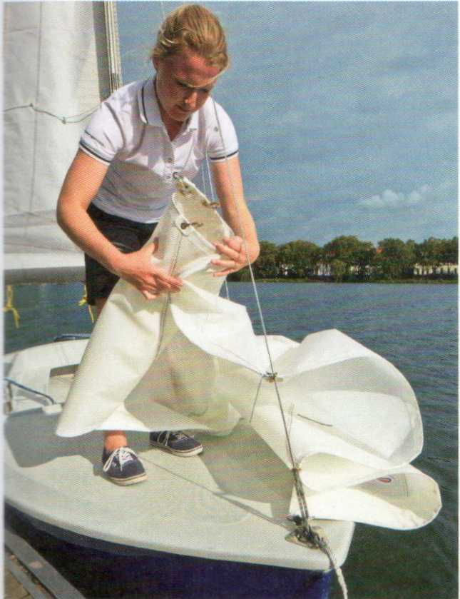
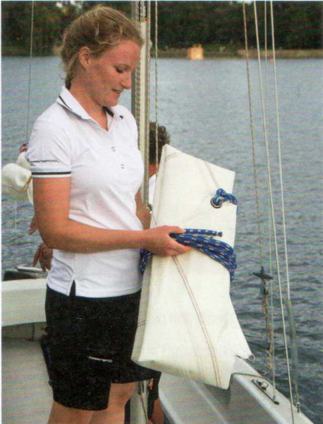
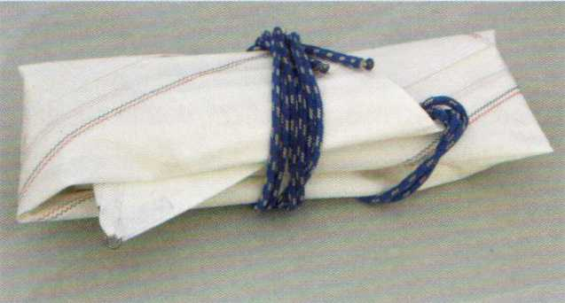
|
Typische Anfängerfehler |
|---|
|
Fallen vertörnen: Die Segel kommen nicht schnell genug herunter. Das versehentlich losgelassene Fall geht in dem Mast hoch. Das Boot liegt zum Bergen des Großsegels nicht genau im Wind: Das Vorliek verklemmt, die Baumnock klatscht seitlich ins Wasser. Der Baum wird beim Bergen des Großsegels nicht abgefangen: Er kracht aufs Achterdeck oder ins Cockpit. Die Fock wird beim Bergen nicht eingefangen und weht ins Wasser. |
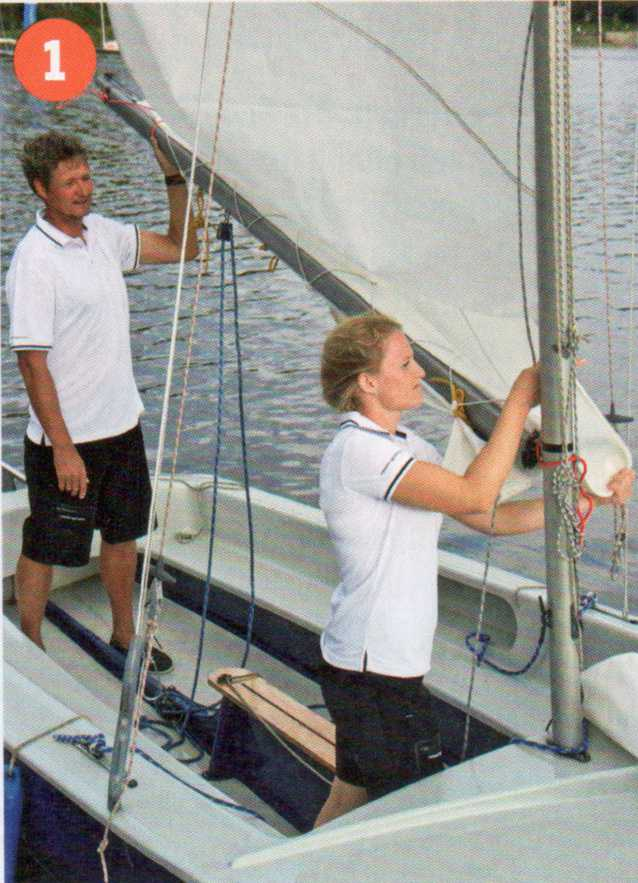
1 Großfall lösen, Baum sichern, Vorliek aus der Nut nehmen
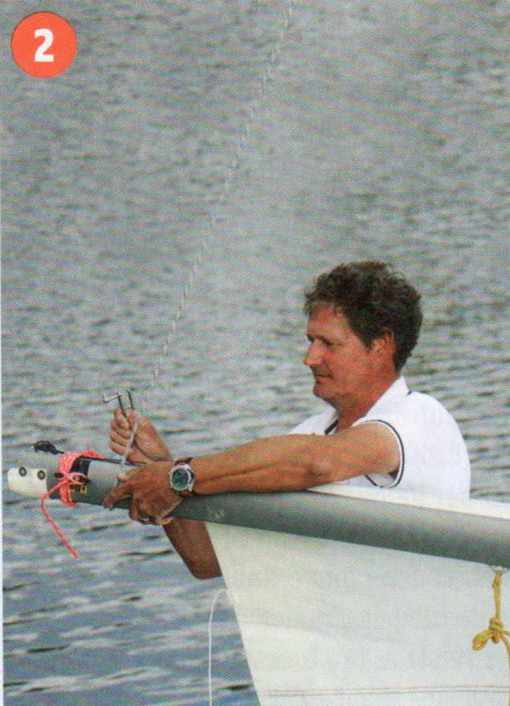
2 ... mit dem Großfall als Dirk den Baum waagerecht halten ...
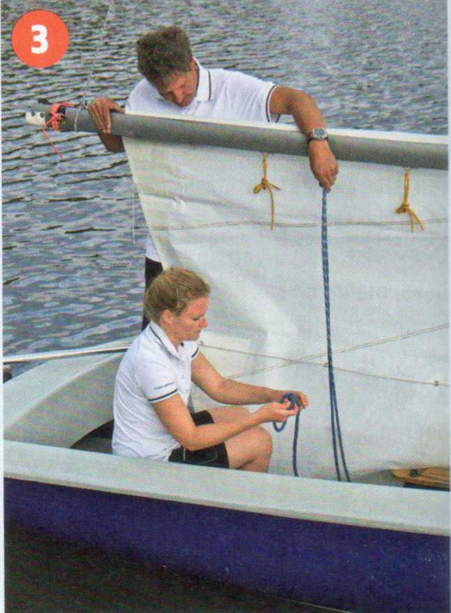
3 ... den Achtknoten in der Großschot lösen ...
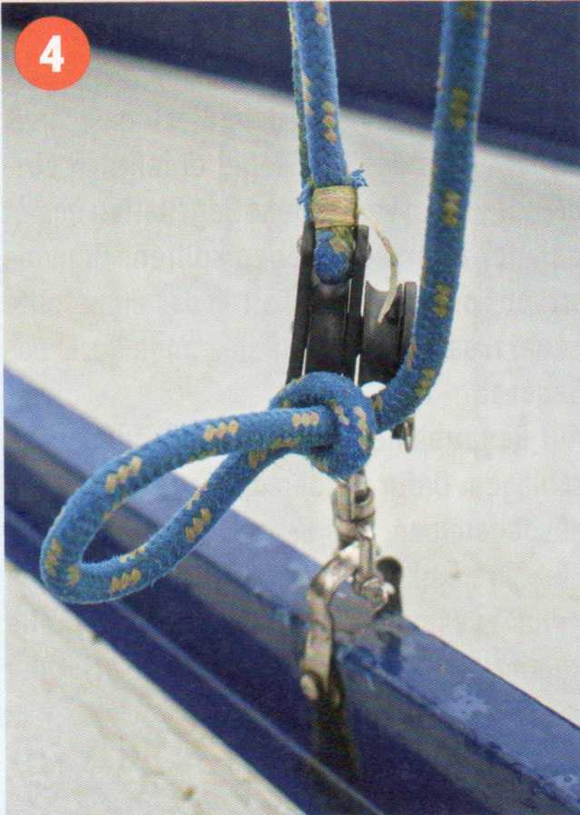
4 ..., und die Großschot mit einem Slipstek direkt vordem Block sichern.
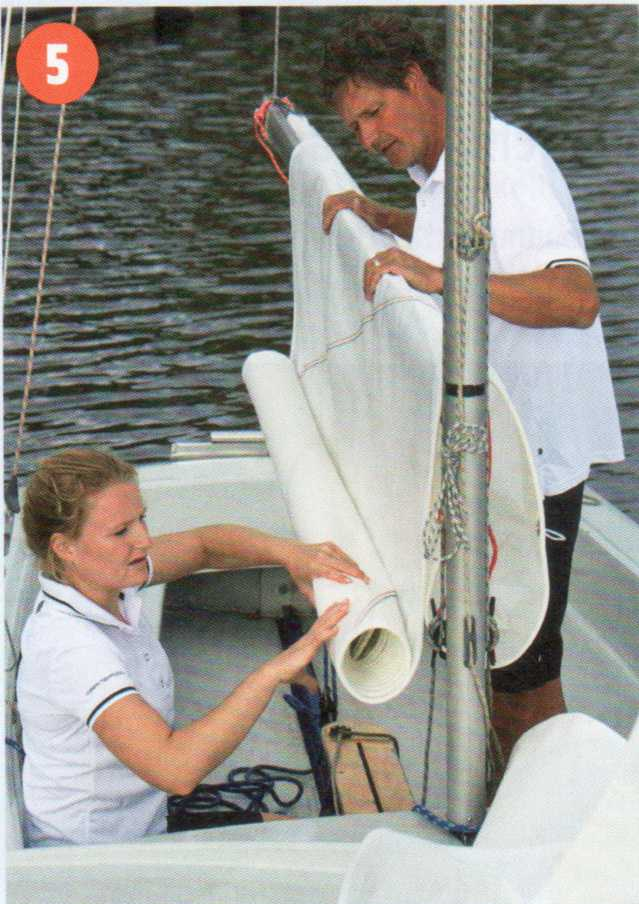
5 Das Segel vom Kopf beginnend über dem Baum einrollen...
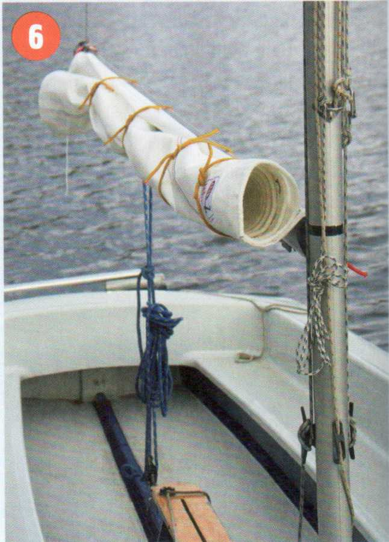
6 ... und mit Stropps oder Zeisingen sichern, die Schot hochbinden und das Segel mit einer Persenning abdecken.
Wenn man einige Zeit nicht segelt, sollte das Großsegel unbedingt vom Baum abgeschlagen und im Segelsack mit nach Hause genommen oder unter Deck gestaut werden.
Beim Auftuchen sollte man immer auf einen sauberen Untergrund achten.
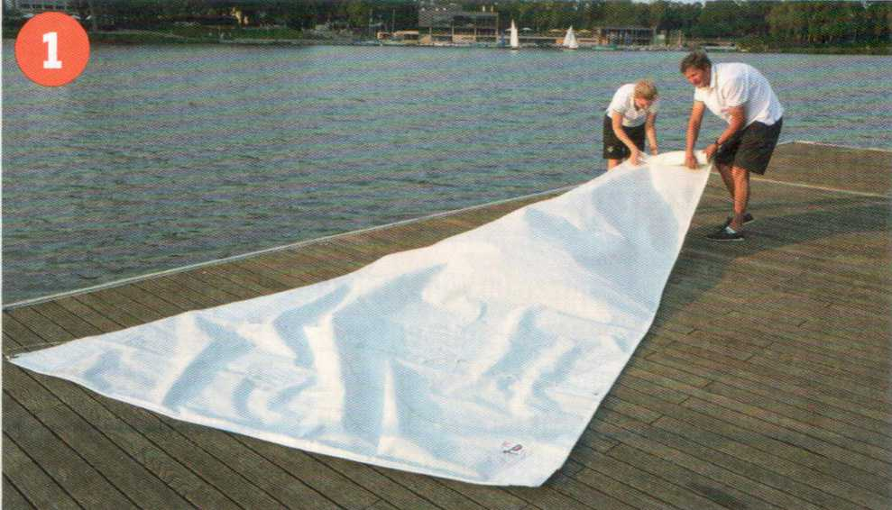
1 Das Segel wird ausgebreitet...
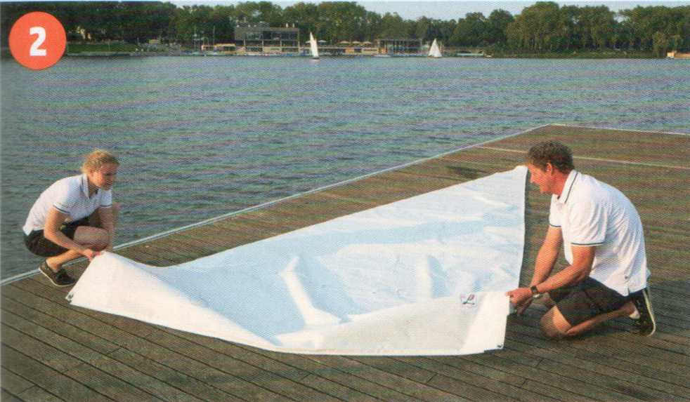
2 ... vom Unterliek ausgehend gefaltet und ...
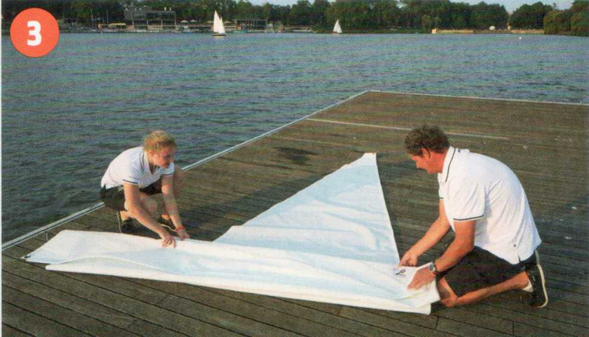
3 ... ordentlich bis zum Segelkopf in Bahnen zusammengelegt.
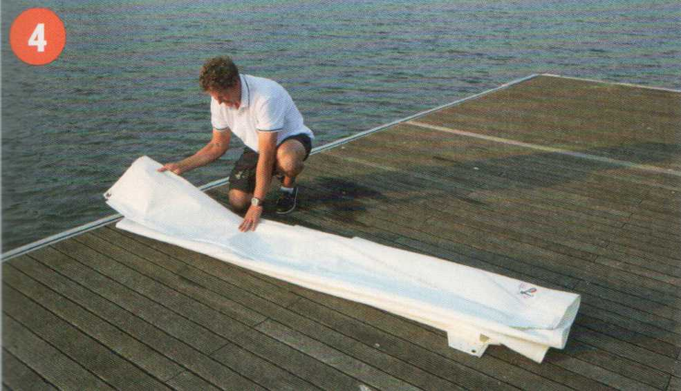
4 Anschließend wird es gleichmäßig eingeschlagen...
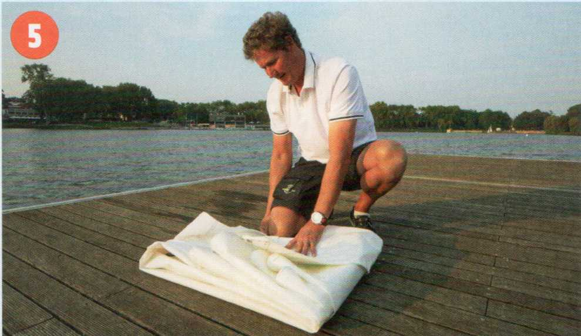
5 ... und zu einem handlichen Paket zusammengefaltet.